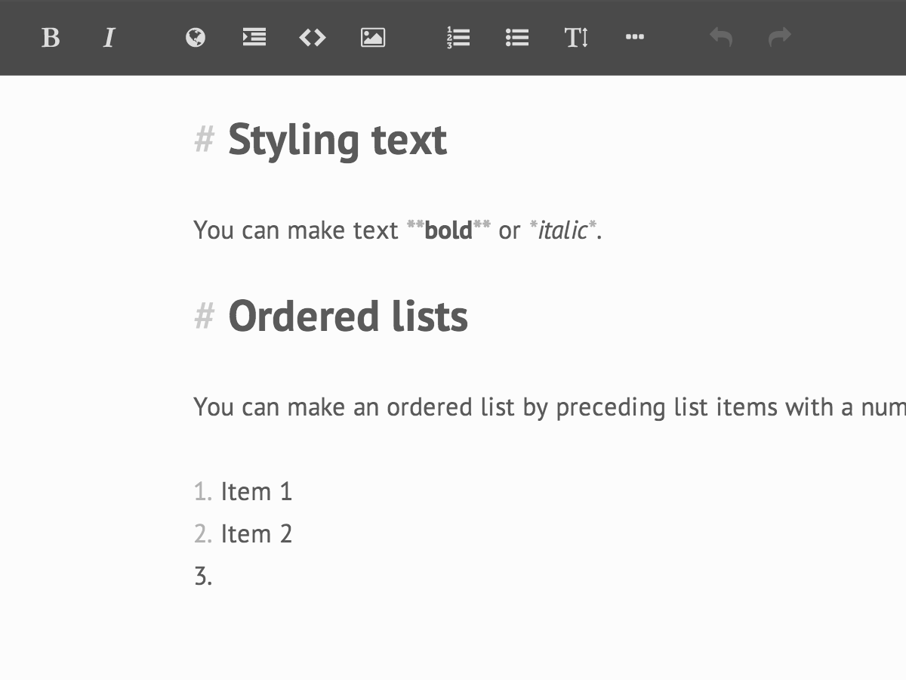
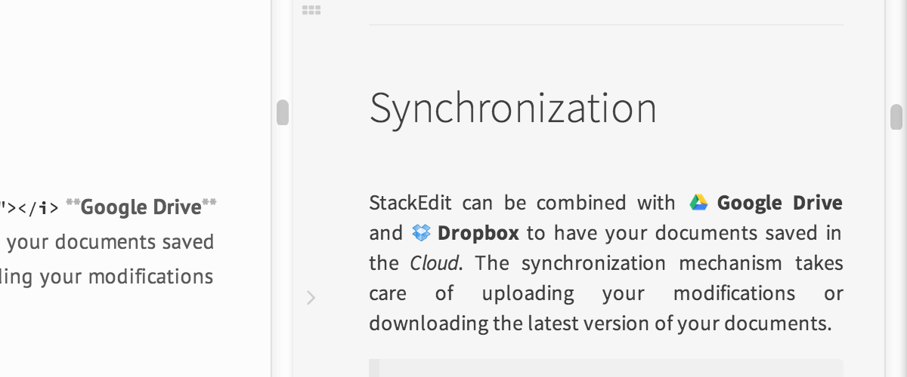

Unrivalled writing experience.

Rich markdown editor
StackEdit’s markdown syntax highlighting is unique. The refined text formatting of the editor helps you visualize the final rendering of your documents.
WYSIWYG controls
StackEdit provides very handy formatting buttons and shortcuts, thanks to PageDown, the WYSIWYG-style markdown editor used by Stack Overflow.
Live preview with Scroll Sync
StackEdit’s Scroll Sync extension accurately binds the scrollbars of the editor panel and the preview panel to ensure that you always keep an eye on the output while writing.

Built-in spell checking
StackEdit uses browser’s built-in spell-checker to perform efficient, multi-language spell-checking and correction suggestions.
Fully customizable
StackEdit offers infinite combinations of settings. Theme, layout, shortcuts can be personalized. For the rest, StackEdit gives you the freedom to make your own extension…